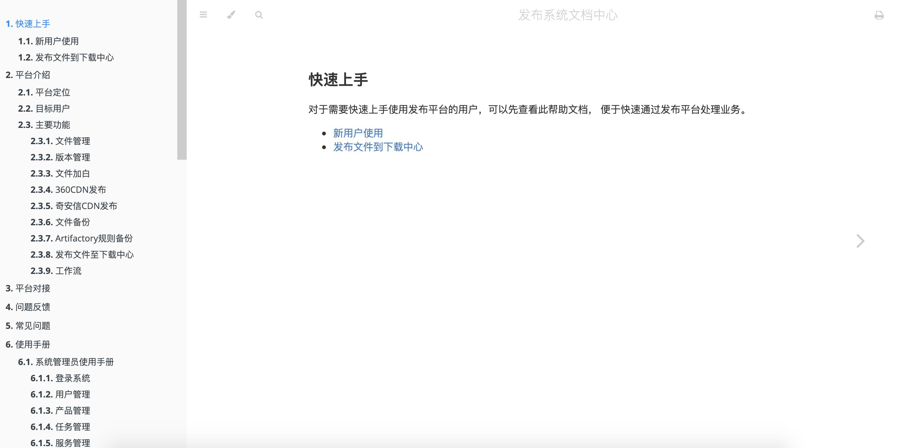
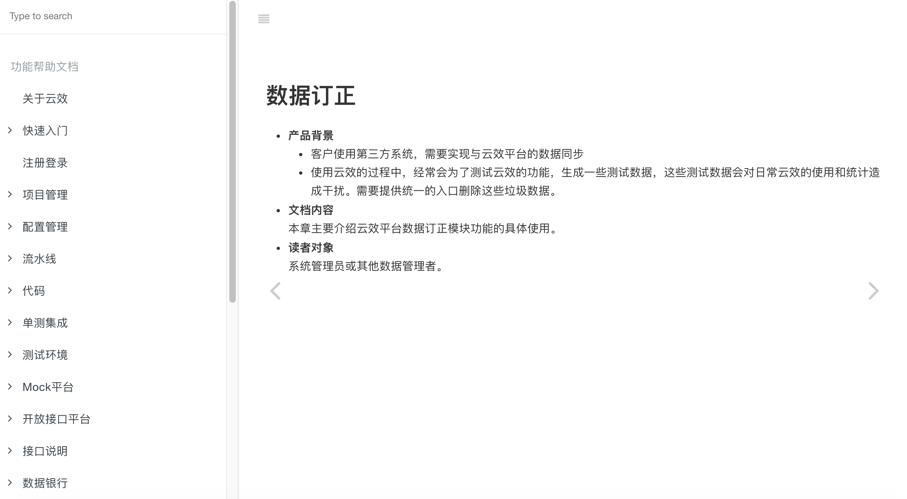

编译
说明
如个人知识博客搭建中所说，编译指的是将Markdown文件转换为静态站点文件的过程，支持此功能的工具主要有两个：
mdbook&Gitbook的对比
共性
mdbook、Gitbook，都是对Markdown文件进行编译，生成静态文件（HTML），通过部署静态文件，就可以发布自己的书籍。
mdbook和Gitbook的呈现形式，都是左侧文章目录+右侧文章详情的结构。
mdbook呈现形式，如下图：

Gitbook呈现形式，如下图：

不仅如此，mdbook和Gitbook的配置、操作流程也很类似，都需要部署环境、执行初始化命令、编译命令等；详细可以参考各自的使用手册：
差异
| 项目/工具 | mdbook | Gitbook |
|---|---|---|
| 运行效率 | 速度快 | 文件过多时，渲染速度慢 |
| 配置步骤 | 配置较少 | 基本配置与mdbook差不多，内部使用需要屏蔽【分享】、【publsh with gitbook】按钮 |
| 依赖环境 | rust | node |
| 活跃度 | 活跃，rust官方文档都是用mdbook编写 | 计划不维护，转成了付费服务 |
| 呈现效果 | 左侧目录+右侧文档 | 左侧目录、Gitbook链接+右侧文档、分享按钮 |
结论
分别使用mdbook和Gitbook来发布了书籍，感受如下：
- mdbook配置比Gitbook简单，Gitbook需要添加外部文件配置
- mdbook支持文件内容一键拷贝
- mdbook执行效率高，渲染效率很高；Gitbook在文件较多时处理速度较慢
综合来看，个人还是推荐使用mdbook。